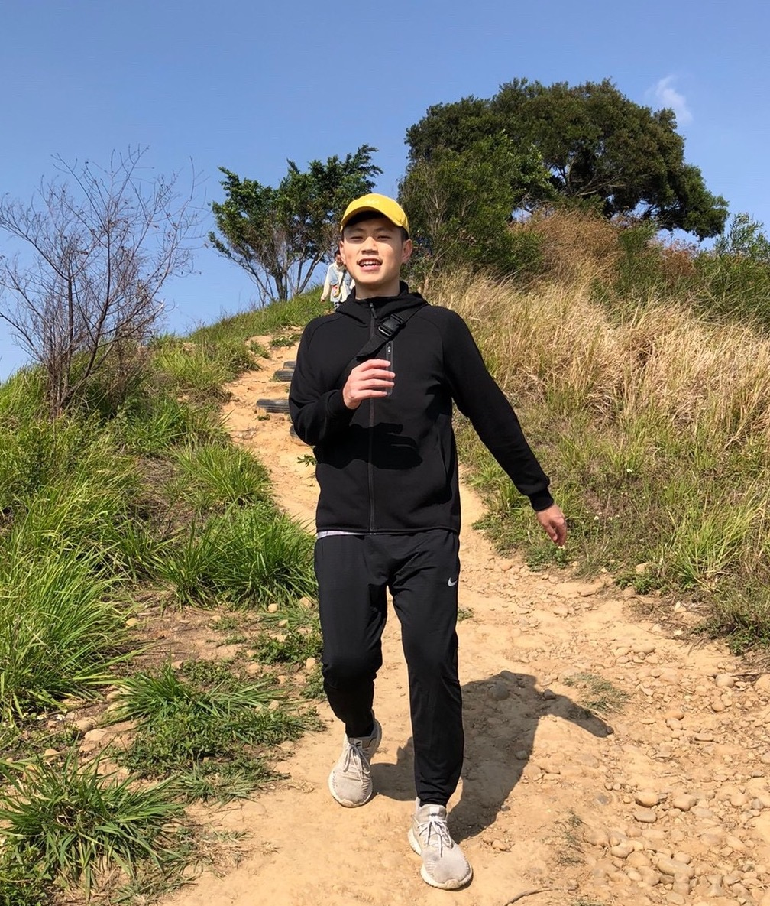

Hello, my name is Huang Kuan-Hsun
一個熱愛運動與科學的 理工宅
參與過許多產學合作計畫與創新產品開發，擁有像是感測裝置、運動鞋、網頁等不同領域的相關經驗，熱愛探索與學習新知的我，擅長將不同領域的知識跨域整合、應用。

About Me
About
參與過許多產學合作計畫與創新產品開發，擁有像是感測裝置、運動鞋、網頁等不同領域的相關經驗，熱愛探索與學習新知的我，擅長將不同領域的知識跨域整合、應用。